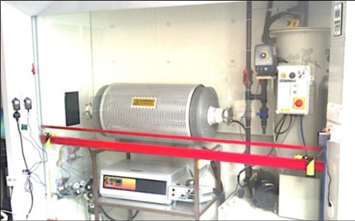
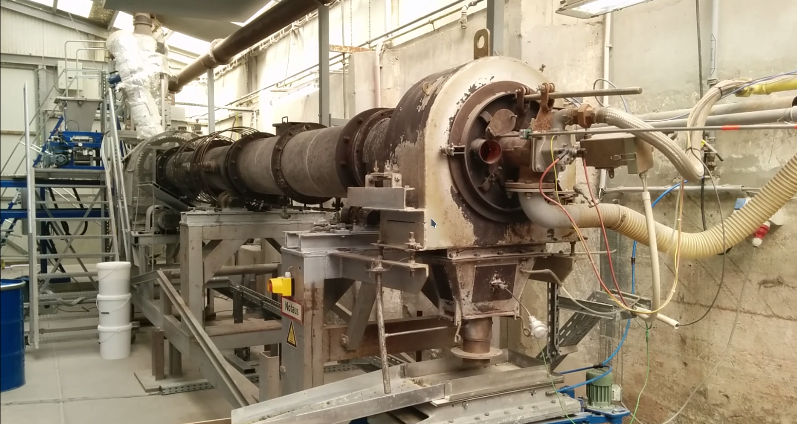
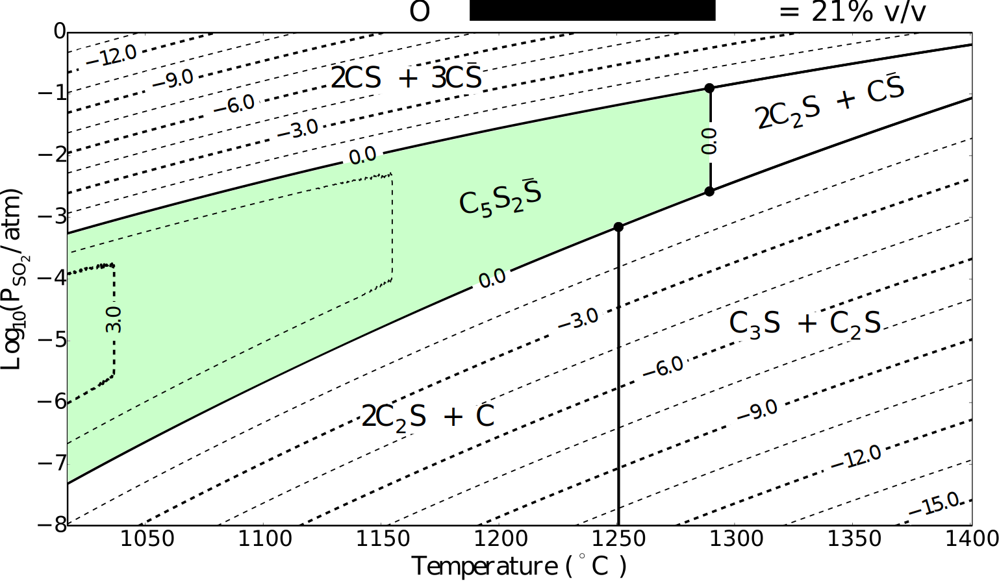

The state of one-dimensional kiln models
September 2022
Marcus N. Campbell Bannerman
m.campbellbannerman@abdn.ac.uk
A Process Engineers View
Scientists discover the world that exists; engineers create
the world that never was.
T. von Kármán
-
We've being creating a lot of new world recently; 7% of
manmade $\text{CO}_2$ emmissions are from cement
production.
Pressure on the cement industry to go-green is increasing.
-
In 2016 and 2017, china's total cement sales equaled the USA
over the entire last century (1900-2000).
The scale is so large, any single solution will fail. Raw material shortages are almost guaranteed!
A Process Engineers View
Scientists discover the world that exists; engineers create
the world that never was.
T. von Kármán
- 4.1B tons of cement produced in 2017 $\approx 0.5$ tons per person. The second most ubiquitous product after water.
-
OPC Cement ($\approx 100$ £/ton), is cheaper than
deionised water ($\approx200$ £/ton), but more expensive
than tap water ($\approx1$ £/ton).
No margin for any fancy processing or raw materials, market for raw materials must support huge volumes.
Alternative Formulations
- Roughly 75% by weight of typical OPC cement clinker is made up of belite and alite: \begin{align} {\color{orangered}8\,\underset{\text{limestone}}{\text{Ca}\text{C}\text{O}_3}}+3\,\underset{\text{sand}}{\text{Si}\text{O}_2}+\ldots \underset{\color{darkred}\mathbf{1450^\circ\text{C}}}{\rightleftarrows} \underset{\text{belite}}{\text{Ca}_2\,\text{Si}\text{O}_4} + 2\,\underset{\text{alite}}{\text{Ca}_3\text{Si}\text{O}_5} + \mathbf{\color{darkred}8\,\text{C}\text{O}_2} \ldots \end{align}
- We need alternative clinker chemistry to reduce limestone usage, as this is the source of the chemistry-derived $\text{C}\text{O}_2$.
- We need alternative fuels and lower-temperature reactions to mitigate fuel-derived $\text{C}\text{O}_2$ emissions.
$\text{C}\bar{\text{S}}\text{A}$ cement
Prof. F. P. Glasser suggested burning sulfur to generate Calcium SulfoAluminate ($\text{C}\bar{\text{S}}\text{A}$) cements: \begin{multline} \mathbf{\color{Apricot}\left(\text{S}+1.5\,\text{O}_2\right)}+ {\color{orangered}6\,\text{Ca}\text{C}\text{O}_3}+\text{Si}\text{O}_2+3\,\text{Al}_2\text{O}_3+\ldots \\ \underset{1250^\circ\text{C}}{\rightleftarrows} \text{Ca}_2\,\text{Si}\text{O}_4 + \underset{\text{bauxite}}{\text{Ca}_4\text{Al}_6\text{S}\text{O}_{10}} + \mathbf{\color{darkred}6\,\text{C}\text{O}_2} \ldots \end{multline} Lower temperatures (vs $1450^\circ$), less $\text{C}\text{O}_2$ per kg clinker1 due to lower lime factor, and able to burn sulfur for process heat! 1Assuming 70%w/w C4A3S, 20%w/w C2S clinker is mass equivalent to OPC clinker. Very rough assumption.
How to develop a new process?
The £3.3M Green Concrete Project (GCP), funded by Gulf Organisation for Research and Development (GORD), Qatar.
Prof. Glasser et al: Chemistry team 
- Atmospheric control tubular furnace.
- Sulfur transfer and phase compatibility of $\text{C}\bar{\text{S}}\text{A}$.
- Gram-scale testing of raw mixes and products.
Myself and (now) Dr T. Hanein: Production team 
- Full-scale process design.
- Pilot trials, IBU-tech, Weimar
to produce clinker for product
testing and process verification
(£250k budget!!). - Thermodynamics and heat transfer models.
New(?) process design

Modifications: scrubber and
burners for liquid sulfur.
Challenges: Energy and chemistry now linked dur to sulfur burning!
Something in the Air
- Box and tubular furnace experiments demonstrated irregular results.
- Example: Ternesite ($\text{C}_5\text{S}_2\bar{\text{S}}$) would only form in box furnaces using sacrificial $\text{C}\bar{\text{S}}$ (see right), not in the tubular furnace using 50:50 bottled dry air and bottle $\text{SO}_2,$ or under pure $\text{SO}_2$ atmospheres.
-
Literature says Ternesite stabilized by
atmospheric moisture?
Y. B. Pliego-Cuervo and F. P. Glasser. “Role of sulphates in cement clinkering: the calcium silicosulphate phase”, CCR 8.4 (1978), pp. 455–459.
Thermodynamics says ternesite has a “goldilocks” zone
- Ternesite is only stable for a range of $\text{S}\text{O}_2$ partial pressures: previous tubular furnace experiments were always either too rich or too lean in $\text{S}\text{O}_2$. T. Hanein, ..., and M.N. Bannerman, “Stability of ternesite and the production at scale of ternesite-based clinkers,” Cement Concrete Res., 98, 91-100 (2017)
- Targeted firings in the “goldilocks” zone formed ternesite at high purity in a single stage (allowing further $C_p$ analysis via DSC).
- Simple mass-balance/Bogue-style equations are dangerous to use for $\text{C}\bar{\text{S}}\text{A}$, as the atmospheric effects are not trivial.
- Similar effects are present for ye'elimite, thus kiln atmospheres are critical in $\text{C}\bar{\text{S}}\text{A}$ synthesis.
- We must use thermodynamics to model new formulations
- All 23 GCP pilot trial points were designed using thermodynamics and were mostly successful.
-
One of the “challenging” trial
points at a target temperature of $1300^\circ$C
is examined. The target was ye'elimite
using high alumina clay instead of bauxite.
Phase $\text{C}_4\text{A}_3\bar{\text{S}}$ $\text{C}_2\text{S}$ $\text{C}_5\text{S}_2\bar{\text{S}}$ $\text{C}\bar{\text{S}}$ Thermodynamics 33% 55% 0% 0% XRD analysis 34% 44% 14% 3% - Thermodynamics fails to predict the appearance of ternesite. What does thermodynamics miss?
- Although kinetics are a factor (more so at low temperatures), our experience shows understanding the actual rather than targeted processing conditions/temperature is far more important.
- A combined thermodynamics and kiln heat-transfer model has been developed to target these issues.
- Our kiln model is fully predictive: inlet gas temperature from adiabatic flame calculation, solids at room temperature. No fitting.
-
It is difficult to get direct thermal
measurements from production kilns:
- Surface temperatures and exit bed temperature are measured via optical pyrometry (which was also used to control the kiln temperature).
- Internal temperatures via thermocouple wells (fixed to wall, so they rotate in and out of the bed).
Conclusions
- Simple equilibrium thermodynamic models are surprisingly powerful.
- Combined thermal and thermodynamic models are predictive.
- New processes can be designed or old debugged/optimized.
- Lots of interesting future work (e.g., solid solutions, bed models, economics, carbon calculations, plant optimisation).T. Hanein, J. L. Galvez-Martos, and M. N. Bannerman, “Carbon footprint of calcium sulfoaluminate clinker production,” J. Clean. Prod., 172, 2278–2287 (2018)
Acknowledgements
- Thanks to all the members of the GCP team for their input over the years.
- Thank you to the Gulf Organization for Research and Development (GORD), Qatar for their the financial support provided by the through research grant number ENG016RGG11757.
- Thanks to Dr Theodore Hanein in particular who was the driving force behind the work.
- Thank you to IBU-tech and their team for their support during the trials.
Appendix
- (2013-2016) £3.3M Green-Concrete Project (GCP) sponsored by the Gulf Organisation for Research & Development, Qatar. PIs: F. P. Glasser and M. S. Imbabi, (10+ PDRAs, 10+PhDs @ Aberdeen).
- One PhD student (Dr Theodore Hanein), three years (at 10%), and £250k to take a partially-verified lab-scale sulfur-burning $\text{C}\bar{\text{S}}\text{A}$ process through pilot trials and design a full-scale process.
-
We achieved all our goals in 2.5
years, with <£100k spent on 20+ trial
points (>15kg product each, one 100kg
production run), thanks to a few key
aspects:
- Careful atmospherically-controlled tubular furnace experiments testing thermodynamic predictions.
- Extensive predictive thermodynamic modelling of tubular furnace and pilot kilns (incl. atmospheres).
- The database uses the following main sources of information:
- NASA CEA database for combustion/rocketry.
- Holland and Powell (2011) database for petrological mineralogy.
- Around 80 individual sources added by hand.
- Primarily stochiometric phases, but end-member models from Holland and Powell are nearly there.
- Some mineralisation accounted for using entropic effects only (thanks to Duncan Herefort for the idea).
- Melt data is currently incomplete so its disabled.
- The free-energy minimizer uses a unique generating function approach and my own compile-time computer algebra library (Stator), combined with a range of general optimizers (IPOpt, NLOPT/SLSQP) with some modifications (more information on request).
Ye'elemite
- Misprints in compiled data sets. E.g., $\text{C}_3\text{A}$ in Babushkin et al. 1985.
- Unknown sources of incorrect data (which only becomes apparent after detailed inspection). E.g., $\text{C}_4\text{AF}$ in Babushkin et al. 1985.
- Errors in coefficients and/or tabulated data. E.g., NIST(!) C-A-S-H compilation of Haas Jr. et al. 1981.
- Dangerous rounding. E.g., E.g., $C_p=1120\approx 1100$ in Kelley 1960.
- Significant "unknown" revision of data, E.g., rankinite compiled by NIST revised significantly by Hillert et al. 1991.
- Missing or incorrect ye'elimite and ternesite data.
- Much of this is known in the oral history of cement, but why do new people have to keep rediscovering it?
- NASA shares rocket/ICBM calculations, can we?
Thermodynamic solver
- Original C++ equation-oriented solver (using IPOPT). Thermodynamic models are expressed as a free-energy function, \begin{align} G_\alpha\left(T,\, p, \left\{N_i\right\}^N_\alpha\right) & & A_\alpha\left(T,\, V, \left\{N_i\right\}^N_\alpha\right) \end{align}
- An original compile-time computer algebra library, stator, is used to generate arbitrary thermodynamic derivatives incl. Hessian.
- Automatic derivatives of Lagrangian yields thermodynamic properties under constraints (i.e., total $C_p$, reactive thermal conductivity).
- Coupled heat transfer and kinetics expressed as constrained minimisation and solved directly (no outer loops).